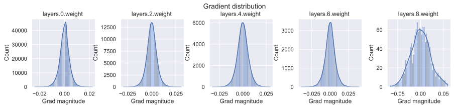
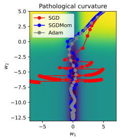

## Standard libraries
import os
import json
import math
import numpy as np
import copy
## Imports for plotting
import matplotlib.pyplot as plt
from matplotlib import cm
%matplotlib inline
from IPython.display import set_matplotlib_formats
set_matplotlib_formats('svg', 'pdf') # For export
import seaborn as sns
sns.set()
## Progress bar
from tqdm.notebook import tqdm
## PyTorch
import torch
import torch.nn as nn
import torch.nn.functional as F
import torch.utils.data as data
import torch.optim as optimTutorial 4: Optimization and Initialization

Filled notebook: 

Pre-trained models: 
Recordings: 

JAX+Flax version: 
Author: Phillip Lippe
Note: Interested in JAX? Check out our JAX+Flax version of this tutorial!
In this tutorial, we will review techniques for optimization and initialization of neural networks. When increasing the depth of neural networks, there are various challenges we face. Most importantly, we need to have a stable gradient flow through the network, as otherwise, we might encounter vanishing or exploding gradients. This is why we will take a closer look at the following concepts: initialization and optimization.
In the first half of the notebook, we will review different initialization techniques, and go step by step from the simplest initialization to methods that are nowadays used in very deep networks. In the second half, we focus on optimization comparing the optimizers SGD, SGD with Momentum, and Adam.
Let’s start with importing our standard libraries:
We will use the same set_seed function as in Tutorial 3, as well as the path variables DATASET_PATH and CHECKPOINT_PATH. Adjust the paths if necessary.
# Path to the folder where the datasets are/should be downloaded (e.g. MNIST)
DATASET_PATH = "../data"
# Path to the folder where the pretrained models are saved
CHECKPOINT_PATH = "../saved_models/tutorial4"
# Function for setting the seed
def set_seed(seed):
np.random.seed(seed)
torch.manual_seed(seed)
if torch.cuda.is_available():
torch.cuda.manual_seed(seed)
torch.cuda.manual_seed_all(seed)
set_seed(42)
# Ensure that all operations are deterministic on GPU (if used) for reproducibility
torch.backends.cudnn.deterministic = True
torch.backends.cudnn.benchmark = False
# Fetching the device that will be used throughout this notebook
device = torch.device("cpu") if not torch.cuda.is_available() else torch.device("cuda:0")
print("Using device", device)Using device cuda:0In the last part of the notebook, we will train models using three different optimizers. The pretrained models for those are downloaded below.
import urllib.request
from urllib.error import HTTPError
# Github URL where saved models are stored for this tutorial
base_url = "https://raw.githubusercontent.com/phlippe/saved_models/main/tutorial4/"
# Files to download
pretrained_files = ["FashionMNIST_SGD.config", "FashionMNIST_SGD_results.json", "FashionMNIST_SGD.tar",
"FashionMNIST_SGDMom.config", "FashionMNIST_SGDMom_results.json", "FashionMNIST_SGDMom.tar",
"FashionMNIST_Adam.config", "FashionMNIST_Adam_results.json", "FashionMNIST_Adam.tar" ]
# Create checkpoint path if it doesn't exist yet
os.makedirs(CHECKPOINT_PATH, exist_ok=True)
# For each file, check whether it already exists. If not, try downloading it.
for file_name in pretrained_files:
file_path = os.path.join(CHECKPOINT_PATH, file_name)
if not os.path.isfile(file_path):
file_url = base_url + file_name
print(f"Downloading {file_url}...")
try:
urllib.request.urlretrieve(file_url, file_path)
except HTTPError as e:
print("Something went wrong. Please try to download the file from the GDrive folder, or contact the author with the full output including the following error:\n", e)Preparation
Throughout this notebook, we will use a deep fully connected network, similar to our previous tutorial. We will also again apply the network to FashionMNIST, so you can relate to the results of Tutorial 3. We start by loading the FashionMNIST dataset:
from torchvision.datasets import FashionMNIST
from torchvision import transforms
# Transformations applied on each image => first make them a tensor, then normalize them with mean 0 and std 1
transform = transforms.Compose([transforms.ToTensor(),
transforms.Normalize((0.2861,), (0.3530,))
])
# Loading the training dataset. We need to split it into a training and validation part
train_dataset = FashionMNIST(root=DATASET_PATH, train=True, transform=transform, download=True)
train_set, val_set = torch.utils.data.random_split(train_dataset, [50000, 10000])
# Loading the test set
test_set = FashionMNIST(root=DATASET_PATH, train=False, transform=transform, download=True)
# We define a set of data loaders that we can use for various purposes later.
# Note that for actually training a model, we will use different data loaders
# with a lower batch size.
train_loader = data.DataLoader(train_set, batch_size=1024, shuffle=True, drop_last=False)
val_loader = data.DataLoader(val_set, batch_size=1024, shuffle=False, drop_last=False)
test_loader = data.DataLoader(test_set, batch_size=1024, shuffle=False, drop_last=False)In comparison to the previous tutorial, we have changed the parameters of the normalization transformation transforms.Normalize. The normalization is now designed to give us an expected mean of 0 and a standard deviation of 1 across pixels. This will be particularly relevant for the discussion about initialization we will look at below, and hence we change it here. It should be noted that in most classification tasks, both normalization techniques (between -1 and 1 or mean 0 and stddev 1) have shown to work well. We can calculate the normalization parameters by determining the mean and standard deviation on the original images:
print("Mean", (train_dataset.data.float() / 255.0).mean().item())
print("Std", (train_dataset.data.float() / 255.0).std().item())Mean 0.2860923707485199
Std 0.3530242443084717We can verify the transformation by looking at the statistics of a single batch:
imgs, _ = next(iter(train_loader))
print(f"Mean: {imgs.mean().item():5.3f}")
print(f"Standard deviation: {imgs.std().item():5.3f}")
print(f"Maximum: {imgs.max().item():5.3f}")
print(f"Minimum: {imgs.min().item():5.3f}")Mean: 0.002
Standard deviation: 1.001
Maximum: 2.022
Minimum: -0.810Note that the maximum and minimum are not 1 and -1 anymore, but shifted towards the positive values. This is because FashionMNIST contains a lot of black pixels, similar to MNIST.
Next, we create a linear neural network. We use the same setup as in the previous tutorial.
class BaseNetwork(nn.Module):
def __init__(self, act_fn, input_size=784, num_classes=10, hidden_sizes=[512, 256, 256, 128]):
"""
Inputs:
act_fn - Object of the activation function that should be used as non-linearity in the network.
input_size - Size of the input images in pixels
num_classes - Number of classes we want to predict
hidden_sizes - A list of integers specifying the hidden layer sizes in the NN
"""
super().__init__()
# Create the network based on the specified hidden sizes
layers = []
layer_sizes = [input_size] + hidden_sizes
for layer_index in range(1, len(layer_sizes)):
layers += [nn.Linear(layer_sizes[layer_index-1], layer_sizes[layer_index]),
act_fn]
layers += [nn.Linear(layer_sizes[-1], num_classes)]
self.layers = nn.ModuleList(layers) # A module list registers a list of modules as submodules (e.g. for parameters)
self.config = {"act_fn": act_fn.__class__.__name__, "input_size": input_size, "num_classes": num_classes, "hidden_sizes": hidden_sizes}
def forward(self, x):
x = x.view(x.size(0), -1)
for l in self.layers:
x = l(x)
return xFor the activation functions, we make use of PyTorch’s torch.nn library instead of implementing ourselves. However, we also define an Identity activation function. Although this activation function would significantly limit the network’s modeling capabilities, we will use it in the first steps of our discussion about initialization (for simplicity).
class Identity(nn.Module):
def forward(self, x):
return x
act_fn_by_name = {
"tanh": nn.Tanh,
"relu": nn.ReLU,
"identity": Identity
}Finally, we define a few plotting functions that we will use for our discussions. These functions help us to (1) visualize the weight/parameter distribution inside a network, (2) visualize the gradients that the parameters at different layers receive, and (3) the activations, i.e. the output of the linear layers. The detailed code is not important, but feel free to take a closer look if interested.
##############################################################
def plot_dists(val_dict, color="C0", xlabel=None, stat="count", use_kde=True):
columns = len(val_dict)
fig, ax = plt.subplots(1, columns, figsize=(columns*3, 2.5))
fig_index = 0
for key in sorted(val_dict.keys()):
key_ax = ax[fig_index%columns]
sns.histplot(val_dict[key], ax=key_ax, color=color, bins=50, stat=stat,
kde=use_kde and ((val_dict[key].max()-val_dict[key].min())>1e-8)) # Only plot kde if there is variance
key_ax.set_title(f"{key} " + (r"(%i $\to$ %i)" % (val_dict[key].shape[1], val_dict[key].shape[0]) if len(val_dict[key].shape)>1 else ""))
if xlabel is not None:
key_ax.set_xlabel(xlabel)
fig_index += 1
fig.subplots_adjust(wspace=0.4)
return fig
##############################################################
def visualize_weight_distribution(model, color="C0"):
weights = {}
for name, param in model.named_parameters():
if name.endswith(".bias"):
continue
key_name = f"Layer {name.split('.')[1]}"
weights[key_name] = param.detach().view(-1).cpu().numpy()
## Plotting
fig = plot_dists(weights, color=color, xlabel="Weight vals")
fig.suptitle("Weight distribution", fontsize=14, y=1.05)
plt.show()
plt.close()
##############################################################
def visualize_gradients(model, color="C0", print_variance=False):
"""
Inputs:
net - Object of class BaseNetwork
color - Color in which we want to visualize the histogram (for easier separation of activation functions)
"""
model.eval()
small_loader = data.DataLoader(train_set, batch_size=1024, shuffle=False)
imgs, labels = next(iter(small_loader))
imgs, labels = imgs.to(device), labels.to(device)
# Pass one batch through the network, and calculate the gradients for the weights
model.zero_grad()
preds = model(imgs)
loss = F.cross_entropy(preds, labels) # Same as nn.CrossEntropyLoss, but as a function instead of module
loss.backward()
# We limit our visualization to the weight parameters and exclude the bias to reduce the number of plots
grads = {name: params.grad.view(-1).cpu().clone().numpy() for name, params in model.named_parameters() if "weight" in name}
model.zero_grad()
## Plotting
fig = plot_dists(grads, color=color, xlabel="Grad magnitude")
fig.suptitle("Gradient distribution", fontsize=14, y=1.05)
plt.show()
plt.close()
if print_variance:
for key in sorted(grads.keys()):
print(f"{key} - Variance: {np.var(grads[key])}")
##############################################################
def visualize_activations(model, color="C0", print_variance=False):
model.eval()
small_loader = data.DataLoader(train_set, batch_size=1024, shuffle=False)
imgs, labels = next(iter(small_loader))
imgs, labels = imgs.to(device), labels.to(device)
# Pass one batch through the network, and calculate the gradients for the weights
feats = imgs.view(imgs.shape[0], -1)
activations = {}
with torch.no_grad():
for layer_index, layer in enumerate(model.layers):
feats = layer(feats)
if isinstance(layer, nn.Linear):
activations[f"Layer {layer_index}"] = feats.view(-1).detach().cpu().numpy()
## Plotting
fig = plot_dists(activations, color=color, stat="density", xlabel="Activation vals")
fig.suptitle("Activation distribution", fontsize=14, y=1.05)
plt.show()
plt.close()
if print_variance:
for key in sorted(activations.keys()):
print(f"{key} - Variance: {np.var(activations[key])}")
##############################################################Initialization
Before starting our discussion about initialization, it should be noted that there exist many very good blog posts about the topic of neural network initialization (for example deeplearning.ai, or a more math-focused blog post). In case something remains unclear after this tutorial, we recommend skimming through these blog posts as well.
When initializing a neural network, there are a few properties we would like to have. First, the variance of the input should be propagated through the model to the last layer, so that we have a similar standard deviation for the output neurons. If the variance would vanish the deeper we go in our model, it becomes much harder to optimize the model as the input to the next layer is basically a single constant value. Similarly, if the variance increases, it is likely to explode (i.e. head to infinity) the deeper we design our model. The second property we look out for in initialization techniques is a gradient distribution with equal variance across layers. If the first layer receives much smaller gradients than the last layer, we will have difficulties in choosing an appropriate learning rate.
As a starting point for finding a good method, we will analyze different initialization based on our linear neural network with no activation function (i.e. an identity). We do this because initializations depend on the specific activation function used in the network, and we can adjust the initialization schemes later on for our specific choice.
model = BaseNetwork(act_fn=Identity()).to(device)Constant initialization
The first initialization we can consider is to initialize all weights with the same constant value. Intuitively, setting all weights to zero is not a good idea as the propagated gradient will be zero. However, what happens if we set all weights to a value slightly larger or smaller than 0? To find out, we can implement a function for setting all parameters below and visualize the gradients.
def const_init(model, c=0.0):
for name, param in model.named_parameters():
param.data.fill_(c)
const_init(model, c=0.005)
visualize_gradients(model)
visualize_activations(model, print_variance=True)Layer 0 - Variance: 2.058276
Layer 2 - Variance: 13.489119
Layer 4 - Variance: 22.100567
Layer 6 - Variance: 36.209572
Layer 8 - Variance: 14.831439As we can see, only the first and the last layer have diverse gradient distributions while the other three layers have the same gradient for all weights (note that this value is unequal 0, but often very close to it). Having the same gradient for parameters that have been initialized with the same values means that we will always have the same value for those parameters. This would make our layer useless and reduce our effective number of parameters to 1. Thus, we cannot use a constant initialization to train our networks.
Constant variance
From the experiment above, we have seen that a constant value is not working. So instead, how about we initialize the parameters by randomly sampling from a distribution like a Gaussian? The most intuitive way would be to choose one variance that is used for all layers in the network. Let’s implement it below, and visualize the activation distribution across layers.
def var_init(model, std=0.01):
for name, param in model.named_parameters():
param.data.normal_(std=std)
var_init(model, std=0.01)
visualize_activations(model, print_variance=True)Layer 0 - Variance: 0.077930
Layer 2 - Variance: 0.004179
Layer 4 - Variance: 0.000207
Layer 6 - Variance: 0.000102
Layer 8 - Variance: 0.000083The variance of the activation becomes smaller and smaller across layers, and almost vanishes in the last layer. Alternatively, we could use a higher standard deviation:
var_init(model, std=0.1)
visualize_activations(model, print_variance=True)Layer 0 - Variance: 7.901733
Layer 2 - Variance: 38.941471
Layer 4 - Variance: 103.246284
Layer 6 - Variance: 262.478546
Layer 8 - Variance: 248.354202With a higher standard deviation, the activations are likely to explode. You can play around with the specific standard deviation values, but it will be hard to find one that gives us a good activation distribution across layers and is very specific to our model. If we would change the hidden sizes or number of layers, you would have to search all over again, which is neither efficient nor recommended.
How to find appropriate initialization values
From our experiments above, we have seen that we need to sample the weights from a distribution, but are not sure which one exactly. As a next step, we will try to find the optimal initialization from the perspective of the activation distribution. For this, we state two requirements:
- The mean of the activations should be zero
- The variance of the activations should stay the same across every layer
Suppose we want to design an initialization for the following layer: \(y=Wx+b\) with \(y\in\mathbb{R}^{d_y}\), \(x\in\mathbb{R}^{d_x}\). Our goal is that the variance of each element of \(y\) is the same as the input, i.e. \(\text{Var}(y_i)=\text{Var}(x_i)=\sigma_x^{2}\), and that the mean is zero. We assume \(x\) to also have a mean of zero, because, in deep neural networks, \(y\) would be the input of another layer. This requires the bias and weight to have an expectation of 0. Actually, as \(b\) is a single element per output neuron and is constant across different inputs, we set it to 0 overall.
Next, we need to calculate the variance with which we need to initialize the weight parameters. Along the calculation, we will need the following variance rule: given two independent variables, the variance of their product is \(\text{Var}(X\cdot Y) = \mathbb{E}(Y)^2\text{Var}(X) + \mathbb{E}(X)^2\text{Var}(Y) + \text{Var}(X)\text{Var}(Y) = \mathbb{E}(Y^2)\mathbb{E}(X^2)-\mathbb{E}(Y)^2\mathbb{E}(X)^2\) (\(X\) and \(Y\) are not refering to \(x\) and \(y\), but any random variable).
The needed variance of the weights, \(\text{Var}(w_{ij})\), is calculated as follows:
\[ \begin{split} y_i & = \sum_{j} w_{ij}x_{j}\hspace{10mm}\text{Calculation of a single output neuron without bias}\\ \text{Var}(y_i) = \sigma_x^{2} & = \text{Var}\left(\sum_{j} w_{ij}x_{j}\right)\\ & = \sum_{j} \text{Var}(w_{ij}x_{j}) \hspace{10mm}\text{Inputs and weights are independent of each other}\\ & = \sum_{j} \text{Var}(w_{ij})\cdot\text{Var}(x_{j}) \hspace{10mm}\text{Variance rule (see above) with expectations being zero}\\ & = d_x \cdot \text{Var}(w_{ij})\cdot\text{Var}(x_{j}) \hspace{10mm}\text{Variance equal for all $d_x$ elements}\\ & = \sigma_x^{2} \cdot d_x \cdot \text{Var}(w_{ij})\\ \Rightarrow \text{Var}(w_{ij}) = \sigma_{W}^2 & = \frac{1}{d_x}\\ \end{split} \]
Thus, we should initialize the weight distribution with a variance of the inverse of the input dimension \(d_x\). Let’s implement it below and check whether this holds:
def equal_var_init(model):
for name, param in model.named_parameters():
if name.endswith(".bias"):
param.data.fill_(0)
else:
param.data.normal_(std=1.0/math.sqrt(param.shape[1]))
equal_var_init(model)
visualize_weight_distribution(model)
visualize_activations(model, print_variance=True)Layer 0 - Variance: 1.020319
Layer 2 - Variance: 1.049295
Layer 4 - Variance: 1.031418
Layer 6 - Variance: 1.025792
Layer 8 - Variance: 0.872356As we expected, the variance stays indeed constant across layers. Note that our initialization does not restrict us to a normal distribution, but allows any other distribution with a mean of 0 and variance of \(1/d_x\). You often see that a uniform distribution is used for initialization. A small benefit of using a uniform instead of a normal distribution is that we can exclude the chance of initializing very large or small weights.
Besides the variance of the activations, another variance we would like to stabilize is the one of the gradients. This ensures a stable optimization for deep networks. It turns out that we can do the same calculation as above starting from \(\Delta x=W\Delta y\), and come to the conclusion that we should initialize our layers with \(1/d_y\) where \(d_y\) is the number of output neurons. You can do the calculation as a practice, or check a thorough explanation in this blog post. As a compromise between both constraints, Glorot and Bengio (2010) proposed to use the harmonic mean of both values. This leads us to the well-known Xavier initialization:
\[W\sim \mathcal{N}\left(0,\frac{2}{d_x+d_y}\right)\]
If we use a uniform distribution, we would initialize the weights with:
\[W\sim U\left[-\frac{\sqrt{6}}{\sqrt{d_x+d_y}}, \frac{\sqrt{6}}{\sqrt{d_x+d_y}}\right]\]
Let’s shortly implement it and validate its effectiveness:
def xavier_init(model):
for name, param in model.named_parameters():
if name.endswith(".bias"):
param.data.fill_(0)
else:
bound = math.sqrt(6)/math.sqrt(param.shape[0]+param.shape[1])
param.data.uniform_(-bound, bound)
xavier_init(model)
visualize_gradients(model, print_variance=True)
visualize_activations(model, print_variance=True)layers.0.weight - Variance: 0.000436
layers.2.weight - Variance: 0.000747
layers.4.weight - Variance: 0.001149
layers.6.weight - Variance: 0.001744
layers.8.weight - Variance: 0.017655Layer 0 - Variance: 1.216592
Layer 2 - Variance: 1.719161
Layer 4 - Variance: 1.714506
Layer 6 - Variance: 2.224779
Layer 8 - Variance: 5.297660We see that the Xavier initialization balances the variance of gradients and activations. Note that the significantly higher variance for the output layer is due to the large difference of input and output dimension (\(128\) vs \(10\)). However, we currently assumed the activation function to be linear. So what happens if we add a non-linearity? In a tanh-based network, a common assumption is that for small values during the initial steps in training, the \(\tanh\) works as a linear function such that we don’t have to adjust our calculation. We can check if that is the case for us as well:
model = BaseNetwork(act_fn=nn.Tanh()).to(device)
xavier_init(model)
visualize_gradients(model, print_variance=True)
visualize_activations(model, print_variance=True)
layers.0.weight - Variance: 0.000016
layers.2.weight - Variance: 0.000027
layers.4.weight - Variance: 0.000036
layers.6.weight - Variance: 0.000049
layers.8.weight - Variance: 0.000455Layer 0 - Variance: 1.295969
Layer 2 - Variance: 0.583388
Layer 4 - Variance: 0.291432
Layer 6 - Variance: 0.265237
Layer 8 - Variance: 0.274929Although the variance decreases over depth, it is apparent that the activation distribution becomes more focused on the low values. Therefore, our variance will stabilize around 0.25 if we would go even deeper. Hence, we can conclude that the Xavier initialization works well for Tanh networks. But what about ReLU networks? Here, we cannot take the previous assumption of the non-linearity becoming linear for small values. The ReLU activation function sets (in expectation) half of the inputs to 0 so that also the expectation of the input is not zero. However, as long as the expectation of \(W\) is zero and \(b=0\), the expectation of the output is zero. The part where the calculation of the ReLU initialization differs from the identity is when determining \(\text{Var}(w_{ij}x_{j})\):
\[\text{Var}(w_{ij}x_{j})=\underbrace{\mathbb{E}[w_{ij}^2]}_{=\text{Var}(w_{ij})}\mathbb{E}[x_{j}^2]-\underbrace{\mathbb{E}[w_{ij}]^2}_{=0}\mathbb{E}[x_{j}]^2=\text{Var}(w_{ij})\mathbb{E}[x_{j}^2]\]
If we assume now that \(x\) is the output of a ReLU activation (from a previous layer, \(x=max(0,\tilde{y})\)), we can calculate the expectation as follows:
\[ \begin{split} \mathbb{E}[x^2] & =\mathbb{E}[\max(0,\tilde{y})^2]\\ & =\frac{1}{2}\mathbb{E}[{\tilde{y}}^2]\hspace{2cm}\tilde{y}\text{ is zero-centered and symmetric}\\ & =\frac{1}{2}\text{Var}(\tilde{y}) \end{split}\]
Thus, we see that we have an additional factor of 1/2 in the equation, so that our desired weight variance becomes \(2/d_x\). This gives us the Kaiming initialization (see He, K. et al. (2015)). Note that the Kaiming initialization does not use the harmonic mean between input and output size. In their paper (Section 2.2, Backward Propagation, last paragraph), they argue that using \(d_x\) or \(d_y\) both lead to stable gradients throughout the network, and only depend on the overall input and output size of the network. Hence, we can use here only the input \(d_x\):
def kaiming_init(model):
for name, param in model.named_parameters():
if name.endswith(".bias"):
param.data.fill_(0)
elif name.startswith("layers.0"): # The first layer does not have ReLU applied on its input
param.data.normal_(0, 1/math.sqrt(param.shape[1]))
else:
param.data.normal_(0, math.sqrt(2)/math.sqrt(param.shape[1]))
model = BaseNetwork(act_fn=nn.ReLU()).to(device)
kaiming_init(model)
visualize_gradients(model, print_variance=True)
visualize_activations(model, print_variance=True)layers.0.weight - Variance: 0.000075
layers.2.weight - Variance: 0.000108
layers.4.weight - Variance: 0.000185
layers.6.weight - Variance: 0.000444
layers.8.weight - Variance: 0.005548Layer 0 - Variance: 1.012342
Layer 2 - Variance: 1.092432
Layer 4 - Variance: 1.268176
Layer 6 - Variance: 1.193706
Layer 8 - Variance: 1.760064The variance stays stable across layers. We can conclude that the Kaiming initialization indeed works well for ReLU-based networks. Note that for Leaky-ReLU etc., we have to slightly adjust the factor of \(2\) in the variance as half of the values are not set to zero anymore. PyTorch provides a function to calculate this factor for many activation function, see torch.nn.init.calculate_gain (link).
Optimization
Besides initialization, selecting a suitable optimization algorithm can be an important choice for deep neural networks. Before taking a closer look at them, we should define code for training the models. Most of the following code is copied from the previous tutorial, and only slightly altered to fit our needs.
def _get_config_file(model_path, model_name):
return os.path.join(model_path, model_name + ".config")
def _get_model_file(model_path, model_name):
return os.path.join(model_path, model_name + ".tar")
def _get_result_file(model_path, model_name):
return os.path.join(model_path, model_name + "_results.json")
def load_model(model_path, model_name, net=None):
config_file, model_file = _get_config_file(model_path, model_name), _get_model_file(model_path, model_name)
assert os.path.isfile(config_file), f"Could not find the config file \"{config_file}\". Are you sure this is the correct path and you have your model config stored here?"
assert os.path.isfile(model_file), f"Could not find the model file \"{model_file}\". Are you sure this is the correct path and you have your model stored here?"
with open(config_file, "r") as f:
config_dict = json.load(f)
if net is None:
act_fn_name = config_dict["act_fn"].pop("name").lower()
assert act_fn_name in act_fn_by_name, f"Unknown activation function \"{act_fn_name}\". Please add it to the \"act_fn_by_name\" dict."
act_fn = act_fn_by_name[act_fn_name]()
net = BaseNetwork(act_fn=act_fn, **config_dict)
net.load_state_dict(torch.load(model_file))
return net
def save_model(model, model_path, model_name):
config_dict = model.config
os.makedirs(model_path, exist_ok=True)
config_file, model_file = _get_config_file(model_path, model_name), _get_model_file(model_path, model_name)
with open(config_file, "w") as f:
json.dump(config_dict, f)
torch.save(model.state_dict(), model_file)
def train_model(net, model_name, optim_func, max_epochs=50, batch_size=256, overwrite=False):
"""
Train a model on the training set of FashionMNIST
Inputs:
net - Object of BaseNetwork
model_name - (str) Name of the model, used for creating the checkpoint names
max_epochs - Number of epochs we want to (maximally) train for
patience - If the performance on the validation set has not improved for #patience epochs, we stop training early
batch_size - Size of batches used in training
overwrite - Determines how to handle the case when there already exists a checkpoint. If True, it will be overwritten. Otherwise, we skip training.
"""
file_exists = os.path.isfile(_get_model_file(CHECKPOINT_PATH, model_name))
if file_exists and not overwrite:
print(f"Model file of \"{model_name}\" already exists. Skipping training...")
with open(_get_result_file(CHECKPOINT_PATH, model_name), "r") as f:
results = json.load(f)
else:
if file_exists:
print("Model file exists, but will be overwritten...")
# Defining optimizer, loss and data loader
optimizer = optim_func(net.parameters())
loss_module = nn.CrossEntropyLoss()
train_loader_local = data.DataLoader(train_set, batch_size=batch_size, shuffle=True, drop_last=True, pin_memory=True)
results = None
val_scores = []
train_losses, train_scores = [], []
best_val_epoch = -1
for epoch in range(max_epochs):
############
# Training #
############
net.train()
true_preds, count = 0., 0
t = tqdm(train_loader_local, leave=False)
for imgs, labels in t:
imgs, labels = imgs.to(device), labels.to(device)
optimizer.zero_grad()
preds = net(imgs)
loss = loss_module(preds, labels)
loss.backward()
optimizer.step()
# Record statistics during training
true_preds += (preds.argmax(dim=-1) == labels).sum().item()
count += labels.shape[0]
t.set_description(f"Epoch {epoch+1}: loss={loss.item():4.2f}")
train_losses.append(loss.item())
train_acc = true_preds / count
train_scores.append(train_acc)
##############
# Validation #
##############
val_acc = test_model(net, val_loader)
val_scores.append(val_acc)
print(f"[Epoch {epoch+1:2d}] Training accuracy: {train_acc*100.0:05.2f}%, Validation accuracy: {val_acc*100.0:05.2f}%")
if len(val_scores) == 1 or val_acc > val_scores[best_val_epoch]:
print("\t (New best performance, saving model...)")
save_model(net, CHECKPOINT_PATH, model_name)
best_val_epoch = epoch
if results is None:
load_model(CHECKPOINT_PATH, model_name, net=net)
test_acc = test_model(net, test_loader)
results = {"test_acc": test_acc, "val_scores": val_scores, "train_losses": train_losses, "train_scores": train_scores}
with open(_get_result_file(CHECKPOINT_PATH, model_name), "w") as f:
json.dump(results, f)
# Plot a curve of the validation accuracy
sns.set()
plt.plot([i for i in range(1,len(results["train_scores"])+1)], results["train_scores"], label="Train")
plt.plot([i for i in range(1,len(results["val_scores"])+1)], results["val_scores"], label="Val")
plt.xlabel("Epochs")
plt.ylabel("Validation accuracy")
plt.ylim(min(results["val_scores"]), max(results["train_scores"])*1.01)
plt.title(f"Validation performance of {model_name}")
plt.legend()
plt.show()
plt.close()
print((f" Test accuracy: {results['test_acc']*100.0:4.2f}% ").center(50, "=")+"\n")
return results
def test_model(net, data_loader):
"""
Test a model on a specified dataset.
Inputs:
net - Trained model of type BaseNetwork
data_loader - DataLoader object of the dataset to test on (validation or test)
"""
net.eval()
true_preds, count = 0., 0
for imgs, labels in data_loader:
imgs, labels = imgs.to(device), labels.to(device)
with torch.no_grad():
preds = net(imgs).argmax(dim=-1)
true_preds += (preds == labels).sum().item()
count += labels.shape[0]
test_acc = true_preds / count
return test_acc First, we need to understand what an optimizer actually does. The optimizer is responsible to update the network’s parameters given the gradients. Hence, we effectively implement a function \(w^{t} = f(w^{t-1}, g^{t}, ...)\) with \(w\) being the parameters, and \(g^{t} = \nabla_{w^{(t-1)}} \mathcal{L}^{(t)}\) the gradients at time step \(t\). A common, additional parameter to this function is the learning rate, here denoted by \(\eta\). Usually, the learning rate can be seen as the “step size” of the update. A higher learning rate means that we change the weights more in the direction of the gradients, a smaller means we take shorter steps.
As most optimizers only differ in the implementation of \(f\), we can define a template for an optimizer in PyTorch below. We take as input the parameters of a model and a learning rate. The function zero_grad sets the gradients of all parameters to zero, which we have to do before calling loss.backward(). Finally, the step() function tells the optimizer to update all weights based on their gradients. The template is setup below:
class OptimizerTemplate:
def __init__(self, params, lr):
self.params = list(params)
self.lr = lr
def zero_grad(self):
## Set gradients of all parameters to zero
for p in self.params:
if p.grad is not None:
p.grad.detach_() # For second-order optimizers important
p.grad.zero_()
@torch.no_grad()
def step(self):
## Apply update step to all parameters
for p in self.params:
if p.grad is None: # We skip parameters without any gradients
continue
self.update_param(p)
def update_param(self, p):
# To be implemented in optimizer-specific classes
raise NotImplementedErrorThe first optimizer we are going to implement is the standard Stochastic Gradient Descent (SGD). SGD updates the parameters using the following equation:
\[ \begin{split} w^{(t)} & = w^{(t-1)} - \eta \cdot g^{(t)} \end{split} \]
As simple as the equation is also our implementation of SGD:
class SGD(OptimizerTemplate):
def __init__(self, params, lr):
super().__init__(params, lr)
def update_param(self, p):
p_update = -self.lr * p.grad
p.add_(p_update) # In-place update => saves memory and does not create computation graphIn the lecture, we also have discussed the concept of momentum which replaces the gradient in the update by an exponential average of all past gradients including the current one:
\[ \begin{split} m^{(t)} & = \beta_1 m^{(t-1)} + (1 - \beta_1)\cdot g^{(t)}\\ w^{(t)} & = w^{(t-1)} - \eta \cdot m^{(t)}\\ \end{split} \]
Let’s also implement it below:
class SGDMomentum(OptimizerTemplate):
def __init__(self, params, lr, momentum=0.0):
super().__init__(params, lr)
self.momentum = momentum # Corresponds to beta_1 in the equation above
self.param_momentum = {p: torch.zeros_like(p.data) for p in self.params} # Dict to store m_t
def update_param(self, p):
self.param_momentum[p] = (1 - self.momentum) * p.grad + self.momentum * self.param_momentum[p]
p_update = -self.lr * self.param_momentum[p]
p.add_(p_update)Finally, we arrive at Adam. Adam combines the idea of momentum with an adaptive learning rate, which is based on an exponential average of the squared gradients, i.e. the gradients norm. Furthermore, we add a bias correction for the momentum and adaptive learning rate for the first iterations:
\[ \begin{split} m^{(t)} & = \beta_1 m^{(t-1)} + (1 - \beta_1)\cdot g^{(t)}\\ v^{(t)} & = \beta_2 v^{(t-1)} + (1 - \beta_2)\cdot \left(g^{(t)}\right)^2\\ \hat{m}^{(t)} & = \frac{m^{(t)}}{1-\beta^{t}_1}, \hat{v}^{(t)} = \frac{v^{(t)}}{1-\beta^{t}_2}\\ w^{(t)} & = w^{(t-1)} - \frac{\eta}{\sqrt{\hat{v}^{(t)}} + \epsilon}\circ \hat{m}^{(t)}\\ \end{split} \]
Epsilon is a small constant used to improve numerical stability for very small gradient norms. Remember that the adaptive learning rate does not replace the learning rate hyperparameter \(\eta\), but rather acts as an extra factor and ensures that the gradients of various parameters have a similar norm.
class Adam(OptimizerTemplate):
def __init__(self, params, lr, beta1=0.9, beta2=0.999, eps=1e-8):
super().__init__(params, lr)
self.beta1 = beta1
self.beta2 = beta2
self.eps = eps
self.param_step = {p: 0 for p in self.params} # Remembers "t" for each parameter for bias correction
self.param_momentum = {p: torch.zeros_like(p.data) for p in self.params}
self.param_2nd_momentum = {p: torch.zeros_like(p.data) for p in self.params}
def update_param(self, p):
self.param_step[p] += 1
self.param_momentum[p] = (1 - self.beta1) * p.grad + self.beta1 * self.param_momentum[p]
self.param_2nd_momentum[p] = (1 - self.beta2) * (p.grad)**2 + self.beta2 * self.param_2nd_momentum[p]
bias_correction_1 = 1 - self.beta1 ** self.param_step[p]
bias_correction_2 = 1 - self.beta2 ** self.param_step[p]
p_2nd_mom = self.param_2nd_momentum[p] / bias_correction_2
p_mom = self.param_momentum[p] / bias_correction_1
p_lr = self.lr / (torch.sqrt(p_2nd_mom) + self.eps)
p_update = -p_lr * p_mom
p.add_(p_update)Comparing optimizers on model training
After we have implemented three optimizers (SGD, SGD with momentum, and Adam), we can start to analyze and compare them. First, we test them on how well they can optimize a neural network on the FashionMNIST dataset. We use again our linear network, this time with a ReLU activation and the kaiming initialization, which we have found before to work well for ReLU-based networks. Note that the model is over-parameterized for this task, and we can achieve similar performance with a much smaller network (for example 100,100,100). However, our main interest is in how well the optimizer can train deep neural networks, hence the over-parameterization.
base_model = BaseNetwork(act_fn=nn.ReLU(), hidden_sizes=[512,256,256,128])
kaiming_init(base_model)For a fair comparison, we train the exact same model with the same seed with the three optimizers below. Feel free to change the hyperparameters if you want (however, you have to train your own model then).
SGD_model = copy.deepcopy(base_model).to(device)
SGD_results = train_model(SGD_model, "FashionMNIST_SGD",
lambda params: SGD(params, lr=1e-1),
max_epochs=40, batch_size=256)Model file of "FashionMNIST_SGD" already exists. Skipping training...============= Test accuracy: 89.09% ==============
SGDMom_model = copy.deepcopy(base_model).to(device)
SGDMom_results = train_model(SGDMom_model, "FashionMNIST_SGDMom",
lambda params: SGDMomentum(params, lr=1e-1, momentum=0.9),
max_epochs=40, batch_size=256)Model file of "FashionMNIST_SGDMom" already exists. Skipping training...============= Test accuracy: 88.83% ==============
Adam_model = copy.deepcopy(base_model).to(device)
Adam_results = train_model(Adam_model, "FashionMNIST_Adam",
lambda params: Adam(params, lr=1e-3),
max_epochs=40, batch_size=256)Model file of "FashionMNIST_Adam" already exists. Skipping training...============= Test accuracy: 89.46% ==============
The result is that all optimizers perform similarly well with the given model. The differences are too small to find any significant conclusion. However, keep in mind that this can also be attributed to the initialization we chose. When changing the initialization to worse (e.g. constant initialization), Adam usually shows to be more robust because of its adaptive learning rate. To show the specific benefits of the optimizers, we will continue to look at some possible loss surfaces in which momentum and adaptive learning rate are crucial.
Pathological curvatures
A pathological curvature is a type of surface that is similar to ravines and is particularly tricky for plain SGD optimization. In words, pathological curvatures typically have a steep gradient in one direction with an optimum at the center, while in a second direction we have a slower gradient towards a (global) optimum. Let’s first create an example surface of this and visualize it:
def pathological_curve_loss(w1, w2):
# Example of a pathological curvature. There are many more possible, feel free to experiment here!
x1_loss = torch.tanh(w1)**2 + 0.01 * torch.abs(w1)
x2_loss = torch.sigmoid(w2)
return x1_loss + x2_lossdef plot_curve(curve_fn, x_range=(-5,5), y_range=(-5,5), plot_3d=False, cmap=cm.viridis, title="Pathological curvature"):
fig = plt.figure()
ax = plt.axes(projection='3d') if plot_3d else plt.axes()
x = torch.arange(x_range[0], x_range[1], (x_range[1]-x_range[0])/100.)
y = torch.arange(y_range[0], y_range[1], (y_range[1]-y_range[0])/100.)
x, y = torch.meshgrid(x, y, indexing='xy')
z = curve_fn(x, y)
x, y, z = x.numpy(), y.numpy(), z.numpy()
if plot_3d:
ax.plot_surface(x, y, z, cmap=cmap, linewidth=1, color="#000", antialiased=False)
ax.set_zlabel("loss")
else:
ax.imshow(z[::-1], cmap=cmap, extent=(x_range[0], x_range[1], y_range[0], y_range[1]))
plt.title(title)
ax.set_xlabel(r"$w_1$")
ax.set_ylabel(r"$w_2$")
plt.tight_layout()
return ax
sns.reset_orig()
_ = plot_curve(pathological_curve_loss, plot_3d=True)
plt.show()In terms of optimization, you can image that \(w_1\) and \(w_2\) are weight parameters, and the curvature represents the loss surface over the space of \(w_1\) and \(w_2\). Note that in typical networks, we have many, many more parameters than two, and such curvatures can occur in multi-dimensional spaces as well.
Ideally, our optimization algorithm would find the center of the ravine and focuses on optimizing the parameters towards the direction of \(w_2\). However, if we encounter a point along the ridges, the gradient is much greater in \(w_1\) than \(w_2\), and we might end up jumping from one side to the other. Due to the large gradients, we would have to reduce our learning rate slowing down learning significantly.
To test our algorithms, we can implement a simple function to train two parameters on such a surface:
def train_curve(optimizer_func, curve_func=pathological_curve_loss, num_updates=100, init=[5,5]):
"""
Inputs:
optimizer_func - Constructor of the optimizer to use. Should only take a parameter list
curve_func - Loss function (e.g. pathological curvature)
num_updates - Number of updates/steps to take when optimizing
init - Initial values of parameters. Must be a list/tuple with two elements representing w_1 and w_2
Outputs:
Numpy array of shape [num_updates, 3] with [t,:2] being the parameter values at step t, and [t,2] the loss at t.
"""
weights = nn.Parameter(torch.FloatTensor(init), requires_grad=True)
optimizer = optimizer_func([weights])
list_points = []
for _ in range(num_updates):
loss = curve_func(weights[0], weights[1])
list_points.append(torch.cat([weights.data.detach(), loss.unsqueeze(dim=0).detach()], dim=0))
optimizer.zero_grad()
loss.backward()
optimizer.step()
points = torch.stack(list_points, dim=0).numpy()
return pointsNext, let’s apply the different optimizers on our curvature. Note that we set a much higher learning rate for the optimization algorithms as you would in a standard neural network. This is because we only have 2 parameters instead of tens of thousands or even millions.
SGD_points = train_curve(lambda params: SGD(params, lr=10))
SGDMom_points = train_curve(lambda params: SGDMomentum(params, lr=10, momentum=0.9))
Adam_points = train_curve(lambda params: Adam(params, lr=1))To understand best how the different algorithms worked, we visualize the update step as a line plot through the loss surface. We will stick with a 2D representation for readability.
all_points = np.concatenate([SGD_points, SGDMom_points, Adam_points], axis=0)
ax = plot_curve(pathological_curve_loss,
x_range=(-np.absolute(all_points[:,0]).max(), np.absolute(all_points[:,0]).max()),
y_range=(all_points[:,1].min(), all_points[:,1].max()),
plot_3d=False)
ax.plot(SGD_points[:,0], SGD_points[:,1], color="red", marker="o", zorder=1, label="SGD")
ax.plot(SGDMom_points[:,0], SGDMom_points[:,1], color="blue", marker="o", zorder=2, label="SGDMom")
ax.plot(Adam_points[:,0], Adam_points[:,1], color="grey", marker="o", zorder=3, label="Adam")
plt.legend()
plt.show()
We can clearly see that SGD is not able to find the center of the optimization curve and has a problem converging due to the steep gradients in \(w_1\). In contrast, Adam and SGD with momentum nicely converge as the changing direction of \(w_1\) is canceling itself out. On such surfaces, it is crucial to use momentum.
Steep optima
A second type of challenging loss surfaces are steep optima. In those, we have a larger part of the surface having very small gradients while around the optimum, we have very large gradients. For instance, take the following loss surfaces:
def bivar_gaussian(w1, w2, x_mean=0.0, y_mean=0.0, x_sig=1.0, y_sig=1.0):
norm = 1 / (2 * np.pi * x_sig * y_sig)
x_exp = (-1 * (w1 - x_mean)**2) / (2 * x_sig**2)
y_exp = (-1 * (w2 - y_mean)**2) / (2 * y_sig**2)
return norm * torch.exp(x_exp + y_exp)
def comb_func(w1, w2):
z = -bivar_gaussian(w1, w2, x_mean=1.0, y_mean=-0.5, x_sig=0.2, y_sig=0.2)
z -= bivar_gaussian(w1, w2, x_mean=-1.0, y_mean=0.5, x_sig=0.2, y_sig=0.2)
z -= bivar_gaussian(w1, w2, x_mean=-0.5, y_mean=-0.8, x_sig=0.2, y_sig=0.2)
return z
_ = plot_curve(comb_func, x_range=(-2,2), y_range=(-2,2), plot_3d=True, title="Steep optima")Most of the loss surface has very little to no gradients. However, close to the optima, we have very steep gradients. To reach the minimum when starting in a region with lower gradients, we expect an adaptive learning rate to be crucial. To verify this hypothesis, we can run our three optimizers on the surface:
SGD_points = train_curve(lambda params: SGD(params, lr=.5), comb_func, init=[0,0])
SGDMom_points = train_curve(lambda params: SGDMomentum(params, lr=1, momentum=0.9), comb_func, init=[0,0])
Adam_points = train_curve(lambda params: Adam(params, lr=0.2), comb_func, init=[0,0])
all_points = np.concatenate([SGD_points, SGDMom_points, Adam_points], axis=0)
ax = plot_curve(comb_func,
x_range=(-2, 2),
y_range=(-2, 2),
plot_3d=False,
title="Steep optima")
ax.plot(SGD_points[:,0], SGD_points[:,1], color="red", marker="o", zorder=3, label="SGD", alpha=0.7)
ax.plot(SGDMom_points[:,0], SGDMom_points[:,1], color="blue", marker="o", zorder=2, label="SGDMom", alpha=0.7)
ax.plot(Adam_points[:,0], Adam_points[:,1], color="grey", marker="o", zorder=1, label="Adam", alpha=0.7)
ax.set_xlim(-2, 2)
ax.set_ylim(-2, 2)
plt.legend()
plt.show()SGD first takes very small steps until it touches the border of the optimum. First reaching a point around \((-0.75,-0.5)\), the gradient direction has changed and pushes the parameters to \((0.8,0.5)\) from which SGD cannot recover anymore (only with many, many steps). A similar problem has SGD with momentum, only that it continues the direction of the touch of the optimum. The gradients from this time step are so much larger than any other point that the momentum \(m_t\) is overpowered by it. Finally, Adam is able to converge in the optimum showing the importance of adaptive learning rates.
What optimizer to take
After seeing the results on optimization, what is our conclusion? Should we always use Adam and never look at SGD anymore? The short answer: no. There are many papers saying that in certain situations, SGD (with momentum) generalizes better where Adam often tends to overfit [5,6]. This is related to the idea of finding wider optima. For instance, see the illustration of different optima below (credit: Keskar et al., 2017):

The black line represents the training loss surface, while the dotted red line is the test loss. Finding sharp, narrow minima can be helpful for finding the minimal training loss. However, this doesn’t mean that it also minimizes the test loss as especially flat minima have shown to generalize better. You can imagine that the test dataset has a slightly shifted loss surface due to the different examples than in the training set. A small change can have a significant influence for sharp minima, while flat minima are generally more robust to this change.
In the next tutorial, we will see that some network types can still be better optimized with SGD and learning rate scheduling than Adam. Nevertheless, Adam is the most commonly used optimizer in Deep Learning as it usually performs better than other optimizers, especially for deep networks.
Conclusion
In this tutorial, we have looked at initialization and optimization techniques for neural networks. We have seen that a good initialization has to balance the preservation of the gradient variance as well as the activation variance. This can be achieved with the Xavier initialization for tanh-based networks, and the Kaiming initialization for ReLU-based networks. In optimization, concepts like momentum and adaptive learning rate can help with challenging loss surfaces but don’t guarantee an increase in performance for neural networks.
References
[1] Glorot, Xavier, and Yoshua Bengio. “Understanding the difficulty of training deep feedforward neural networks.” Proceedings of the thirteenth international conference on artificial intelligence and statistics. 2010. link
[2] He, Kaiming, et al. “Delving deep into rectifiers: Surpassing human-level performance on imagenet classification.” Proceedings of the IEEE international conference on computer vision. 2015. link
[3] Kingma, Diederik P. & Ba, Jimmy. “Adam: A Method for Stochastic Optimization.” Proceedings of the third international conference for learning representations (ICLR). 2015. link
[4] Keskar, Nitish Shirish, et al. “On large-batch training for deep learning: Generalization gap and sharp minima.” Proceedings of the fifth international conference for learning representations (ICLR). 2017. link
[5] Wilson, Ashia C., et al. “The Marginal Value of Adaptive Gradient Methods in Machine Learning.” Advances in neural information processing systems. 2017. link
[6] Ruder, Sebastian. “An overview of gradient descent optimization algorithms.” arXiv preprint. 2017. link
 If you found this tutorial helpful, consider ⭐-ing our repository.
If you found this tutorial helpful, consider ⭐-ing our repository.
 For any questions, typos, or bugs that you found, please raise an issue on GitHub.
For any questions, typos, or bugs that you found, please raise an issue on GitHub.